Daily checkout, maandag 11-11-24
Wat heb ik vandaag gedaan?
Ik heb mijn feedback van de midterm assesment nog is doorgelezen, zo had ik weer goed voor ogen waar ik me de komende weken op wil focussen. Daarna heb ik de
sprintplanning doorgenomen en in mijn projectboard gezet wat de belangrijkste punten in deze sprint zijn. We hebben met ons 1H Bieb in Bloei team besproken hoe
de afgelopen sprint review was gegaan, daarna zijn we met de huisstijl van de website aan de slag gegaan. We hebben in Figma alle onderdelen van de website
verzameld waaronder stylen van, buttons, lettertypens, headings, afbeeldingen etc.
Drie dingen die ik heb geleerd:
- Wat we gaan behandelen deze sprint
- In hoeveel dingen een huisstijl doorgetrokken kan worden
- Hoe je het begin van een stylesheet op kan zetten, door beeldmateriaal en informatie te verzamelen
Hoe gaan we de teamopdracht maken?
Samenwerken in en na de les en zorgen dat iedereen een gelijk deel kan doen, zodat niet een iemand het helemaal alleen moet/gaat doen.
In de teams chat gaan we afspraken bijhouden die gaan over de manier van samenwerken, wie wat gaat doen en wie wanneer in het bestand gaat werken.
Zo kan er geen onduidelijkheid ontstaan en hebben we ook het probleem niet dat er twee mensen tegelijk in het bestand werken waardoor we geen dubbel werk gaan doen.
Bewijsmateriaal
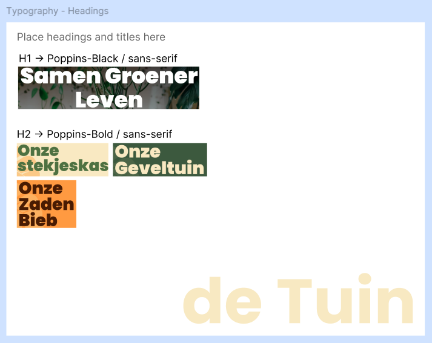
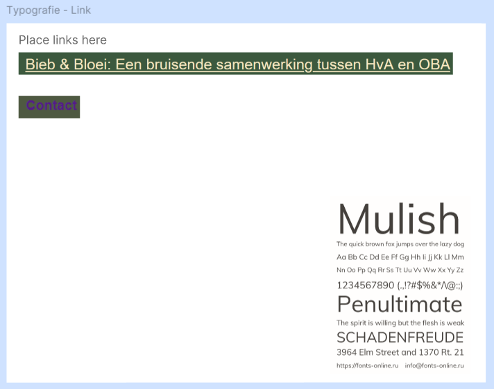
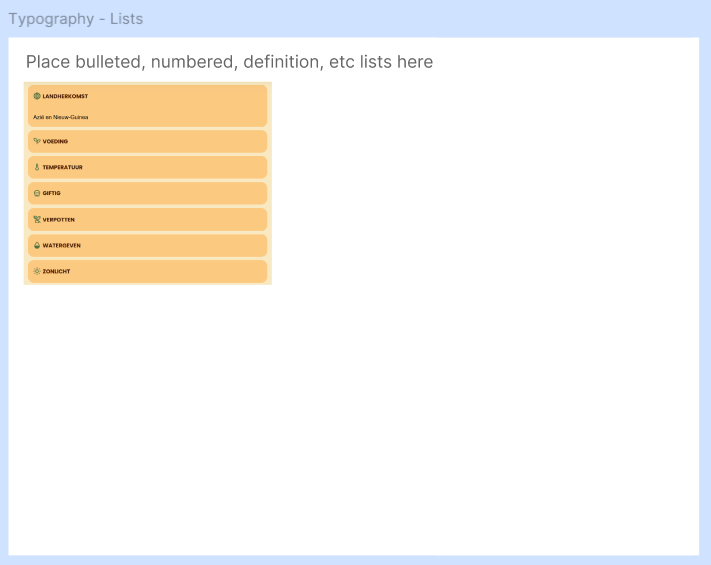
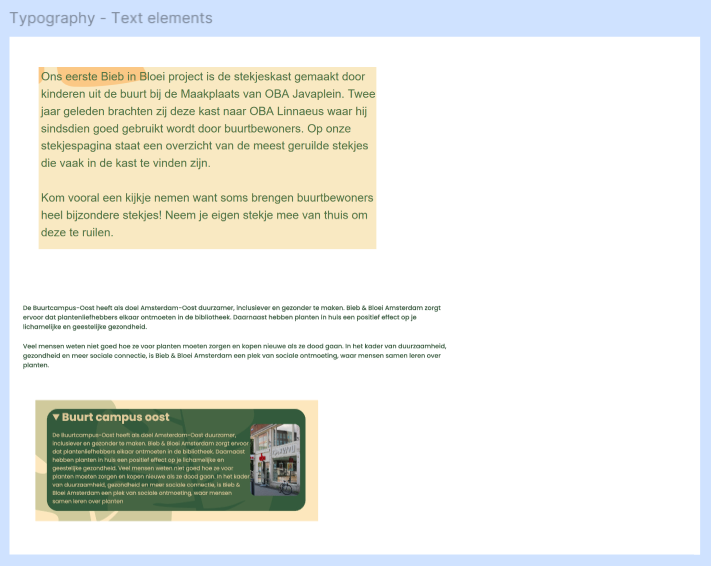
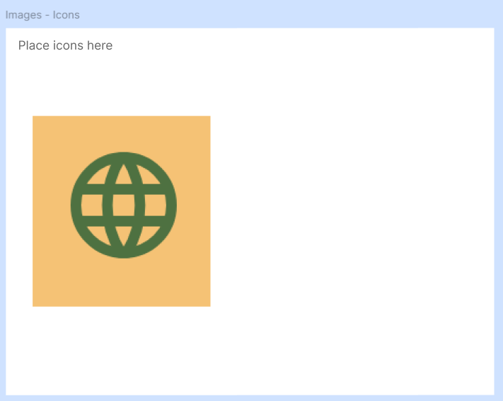
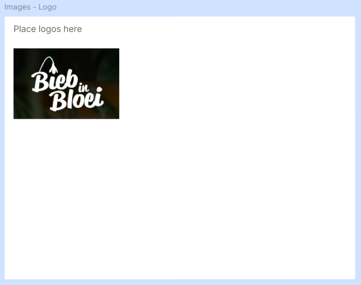
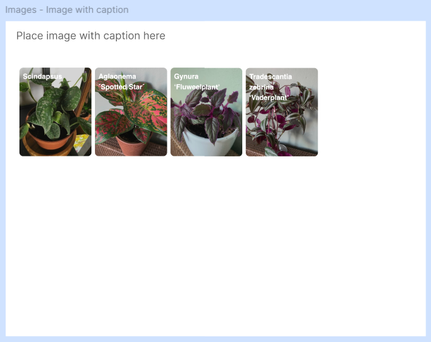
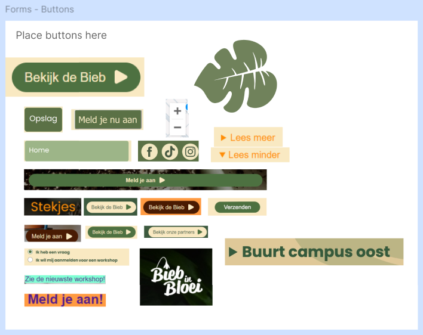
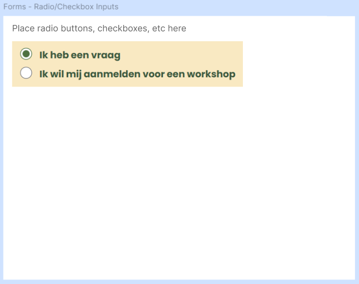
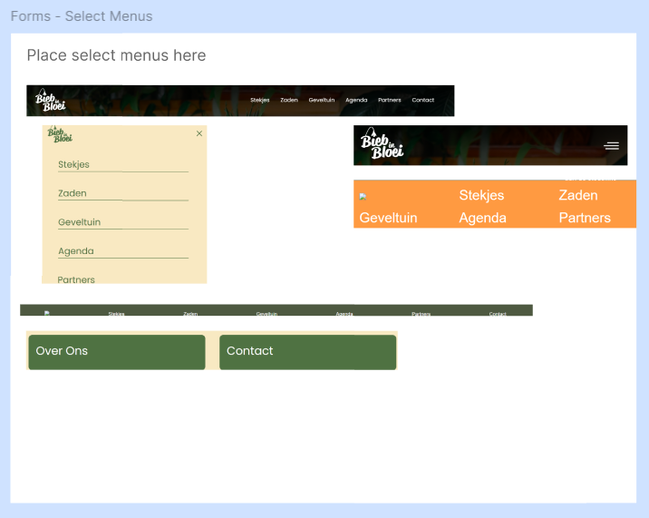
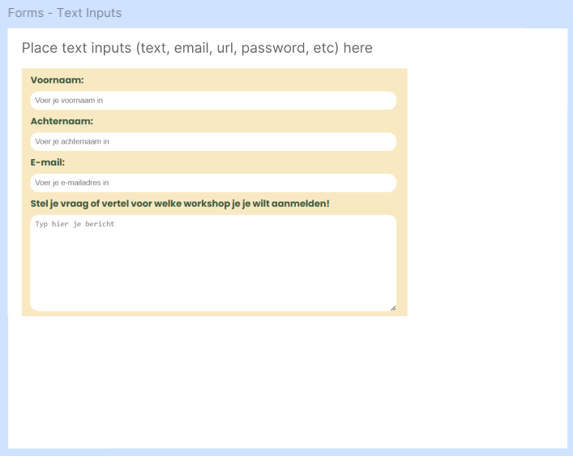
Daily checkout, dinsdag 12-11-24
Wat heb ik gedaan vandaag?
Ik heb meegedaan met de figma workshop van Wes Oudshoorn.
Ik heb 3 landing pages gemaakt, die je hier kan zien.
Ik vind het heel interessant om te zien wat je allemaal kan met figma. Ik heb veel met InDesign gewerkt en ik vind het wel iets op elkaar lijken. Ik merk nu dat ik heb leren werken met de desktop versie ipv via google dat ik ook sneller ben
in het vinden en goed toepassen van de tools die ik nodig heb. Waardevolle les, gaat mij veel tijd besparen.
Bewijsmateriaal


Daily checkout, vrijdag 15-11-24
Wat heb ik vandaag gedaan?
Ik heb samen met Miel en Anouar de stylesheets van de groepen DDA en Tumimundo feedback gegeven. We hebben zelf ook wat issues gekregen en daar zijn we na overleg ook gelijk mee aan de slag gegaan.
We hadden de kleuren bijvoorbeeld als --white aangegeven maar dat vonden wij wel overzichtelijk maar veel mensen vonden het onhandig dus dat hebben we aangepast, zie foto bij bewijsmateriaal.
Daarna ben ik ook begonnen met mijn eigen HTML en CSS opzetten. Ik heb de gezamelijke stylesheet gekoppeld aan mijn HTML bestand en hij werkt.
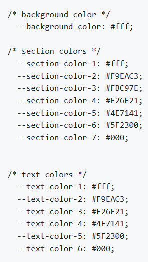
Daily checkout, maandag 18-11-24
Wat heb ik gedaan vandaag?
Ik heb meegedaan met de uitleg van de Look and Feel - Corporate Identity, Typografie en EM. Ik heb samen met Kate de websites van
de Correspondent en
pixelambacht bekeken en onderzocht hoe de typografie wordt gebruikt.
Ik heb zelf een font ontworpen en die toegepast op mijn i love web website. Er was een proefstudente die ik de hele dag ook een beetje heb meegenomen in wat ik heb gedaan.
Vier dingen die ik vandaag heb geleerd:
- Hoe je je eigen font maakt
- Hoe je je eigen font in de website kan coderen
- Dat je altijd een fallback moet hebben op je lettertype, ookal is het een lettertype die altijd ondersteund word. Altijd san-serif of serif erachter zetten
- Het verschil tussen san-serif en serif. san serif heeft geen dingetjes aan het einde van de letter
Bewijsmateriaal
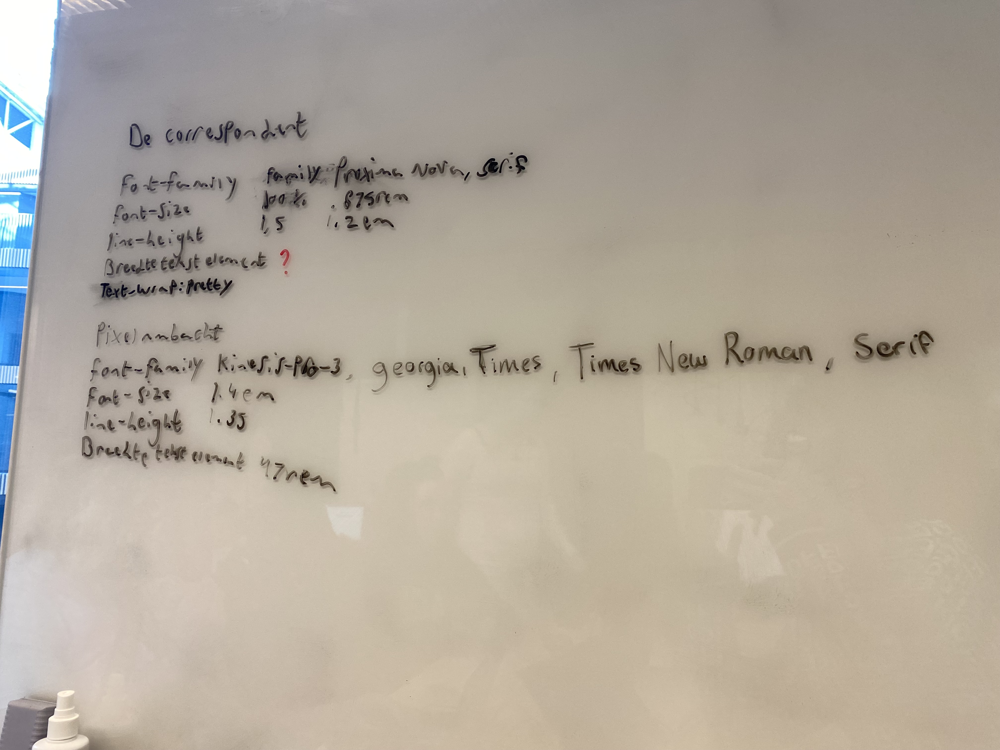
Daily checkout, woensdag 20-11-24
Wat heb ik gedaan vandaag?
Ik heb vandaag meegedaan met de workshop over formulieren. Ik heb samen met mijn tafel de verschillende inputs op het whiteboard geschreven en de bijbehoordende attributen
erbij gezocht en geschreven. Met ons bieb in bloei team hebben we in de stylesheet nog even gekeken naar de kleuren van de formulieren. Ik ben in Figma aan
de slag gegaan om een ontwerp te maken voor de Over Ons pagina van de bieb in bloei website. Ik heb een grof idee bedacht en uitgewerkt.
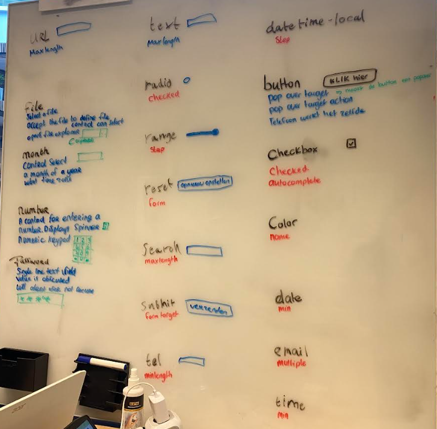
Twee dingen die ik heb geleerd over HTML
- Hoeveel inputs er zijn voor forms
- Dat je heel veel kan met een input
Daily checkout, vrijdag 22-11-24
Wat heb ik gedaan vandaag?
Ik heb een code revieuw bij @Brancovanbeek en @halima98. Daarna ben ik verder gegaan aan mn i love web, daily checkouts.
Ik heb de nieuwe daily updates en foto's bij elkaar gezocht en erin gezet.
Daily checkout, maandag 25-11-24
Wat heb ik gedaan vandaag?
Ik heb uit de workshop Layout en compositie de Law of Proximity onderzocht. Ik heb een voorbeeldje gemaakt en die gepresenteerd aan Sidney en kate.
Daarna ben ik hem gaan doorvoeren op mijn eigen project van BiebInBloei. Vooral in mijn comtact formulier was dat nog nodig volgens Koop.
De drie Gestalt wetten uitgelegt:
Complimenten
- Gekregen van Sebastiaan: Ik vind het lief dat je me probeert te helpen!
- Gegeven aan Sebastiaan: Ik vind dat je goeie inzet toont en het uit wil blijven zoeken ookal lukt het niet meteen!
Daily checkout, woensdag 27-11-24
Wat heb ik gedaan vandaag?
Ik heb met Dion naar mijn code gekeken want ik kreeg mijn gradient over de header niet werkend. We hebben gevonden waar het aan lag en gelijk opgelost.
Ik heb zijn feedback ook opgeslagen als een issue zodat ik het makkelijk weer terug kan vinden.
Daarna heb ik de Read Me geschreven van de opdracht waar ik nu mee bezig ben, de Over ons pagina van Bieb in Bloei
Ik heb ook vast bedacht wat ik morgen aan de opdrachtgever wil laten zien (figma bestanden) en wat ik aan de opdrachtgever wil vragen.
Mijn code vraag:
Mijn vraag aan Dion was dat mijn gradient niet werkte en hoe we dit konden oplossen. We hebben een aantal dingen aangepast:
- class name veranderd van "header.image" naar "gradient"
- kleurcode aangepast van hex naar rgba
- de div van het gradient niet meer om de H1 en nav laten staan maar er een losse div van gemaakt
- position: absolute gegeven aan gradient en position: relative gegeven aan de header
- z-index: 1 gegeven aan de H1 en nav die onder de gradient stonden
Ik heb er samen met wat ander feedback van Dioneen issue van gemaakt.
Daily checkout, vrijdag 29-11-24
Wat heb ik gedaan vandaag?
We hebben de retrospect van sprint 4 gehad vandaag. We hebben met ons bieb in bloei team uit 1H besproken wat we hebben gedaan, wie wat heeft gedaan en hoe we het hebben gedaan. We hebben op het whiteboard
geschreven wie welke issues heeft opgepakt. Daarna zijn we bezig gegaan met de bewijslasten, een deel moesten we samen doen dus dat hebben we gedaan. Daarna is iedereen individueel verder gegaan met de andere
twee bewijslasten maar hebben we elkaar nog wel geholpen onderling.